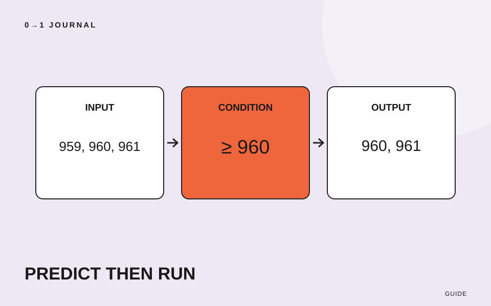

この記事の目次
サンプルを写したら結果は出た。でも、数字を一つ変えたらどうなるかと聞かれると説明できない。そういうときは、コードを最初から全部覚え直す前に、小さな入力で結果を予想してみましょう。予想が外れた箇所が、次に調べる対象になります。
ここでは架空の写真展示サイトで「横幅が一定以上の作品データを選ぶ」処理を使います。実際の画像を読み込む処理ではなく、数字だけの練習です。学習の確認方法として提案するもので、これだけでプログラム全体を理解したと判定するものではありません。
三行を「材料・選ぶ条件・確かめ方」として読む
次のコードは、JavaScriptを実行できる環境で単独で動かせます。通信やファイルの書き換えは行いません。練習用ページの開発者ツールのConsoleなどで、一度実行してみてください。
const widths = [480, 960, 1280];
const largeWidths = widths.filter((width) => width >= 960);
console.log(largeWidths);
一行目は横幅を表す数字を配列に入れます。配列は、複数の値を順番に持つ入れ物です。二行目では、一つずつ取り出した値をここではwidthと呼び、960以上かどうかを調べています。三行目は選ばれた結果をConsoleに表示します。結果の値は[960, 1280]です。
filter()は条件を通った要素を集めた新しい配列を返す仕組みです。詳しい動作はMDNのfilterの説明を確認できます。ここでは数字を選ぶことに絞り、画面への表示や画像の大きさの変更はしていません。
「大きいものを選ぶ」を、数値で言い直す
「二行目は大きいものを選ぶ」という説明だけでは、960を含むかどうかが残ります。「960以上の数字を選ぶ」と言い直してみてください。>=は等しい場合も含む比較です。
間違えやすい説明は「960より大きい数字だけが残る」です。その説明だと結果は1280だけになるはずですが、コードでは960も残ります。コードと説明のどちらが目的に合っているかを先に決めましょう。展示の条件を「960以上」とするなら説明を直し、「960を超える」とするなら比較を>へ変えます。
出力を正解として暗記するのではなく、目的、書いた条件、実際の結果の三つを並べるのが、この練習の中心です。名前にlargeと書いてあっても、それだけで選別の基準が決まるわけではありません。
境目の前後を、実行する前に予想する
一行目の配列を[959, 960, 961]へ変えた場合を考えます。実行する前に、紙へ残る数字を書いてください。元の条件なら960と961が残るはずです。次に実行し、予想と照らし合わせます。
さらに配列を[320, 480]へ変えると、条件に合うものはありません。結果は空の配列[]です。「何もないから故障」と判断する前に、入力が条件を満たしているかを確かめましょう。予想が違ったら、一度に条件と材料の両方を変えず、どちらか一つへ戻します。
同じConsoleでconstを再宣言した際にエラーが出る環境では、練習用ページを再読み込みしてから変更後の三行を実行してください。別のサイトで何度もコードを試すのではなく、手元の練習環境を使います。
分からない部分を、調べられる一問にする
「JavaScriptが分からない」では範囲が広すぎます。今回なら「等しい値も残るのはなぜか」「一件も合わない場合は何が返るか」のように、予想と違った箇所を質問にします。
調べた後は、もう一つ別の入力で説明が通るかを確かめてください。たとえば[960, 960]なら、二つとも条件を満たします。このように材料を変えると、たまたま最初の結果だけを覚えていたかどうかを点検できます。
制作の記録に残すときは、ポートフォリオで制作の理由を書く記事も参考になります。「コードを理解した」と大きく書くより、「960を含む条件を説明し、境目の三つの値で確認した」と書けば、実施した範囲が伝わります。
15分を目安に、予想と結果を一組残す
この三行を使い、材料、選ぶ条件、出力の三つを自分の言葉で書きます。その後、配列を一回変え、実行前の予想と実行後の結果を記録してください。違いがあれば、調べたい問いを一つ添えます。
今回の完成物は、動くコードのコピーだけでなく、その短い記録です。次に画面の操作を含む課題へ進む際は、JavaScriptの無料レッスンでフォームUIの例を確認できます。
記載内容へのご質問や訂正のご連絡は、hello@junkbranding.comまでお願いします。